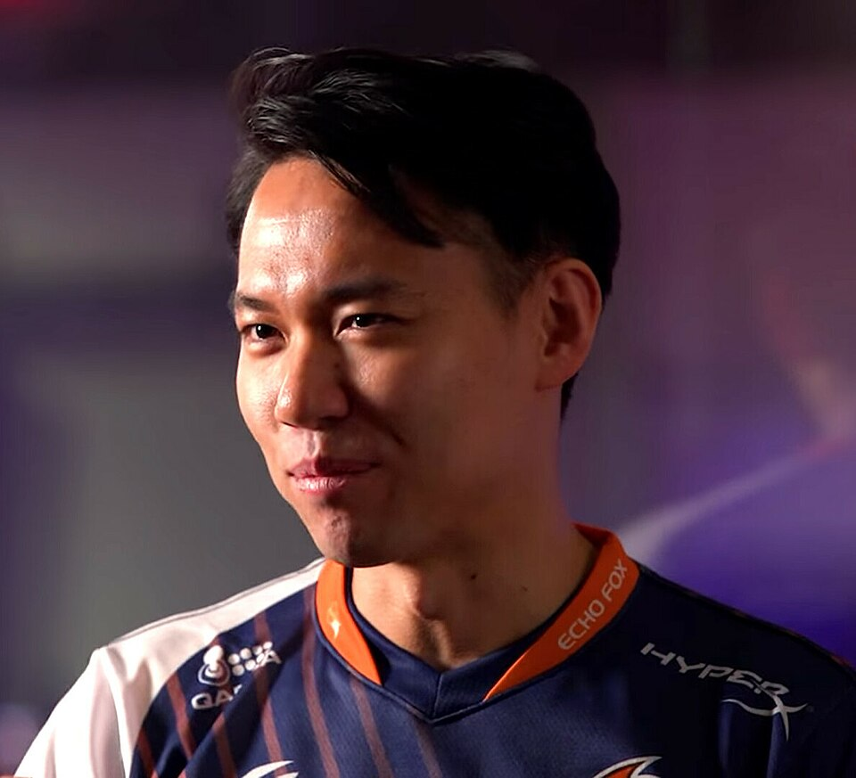

eスポーツ
•
eスポーツ / ストリートファイター6
ときど / たにぐち はじめ
ときど（谷口 一）
Tokido / Hajime Taniguchi
🏢 所属: REJECT / ロート製薬
🏅 EVO 3度制覇🏅 東大卒プロゲーマー🏅 アジア競技大会日本代表候補
『東大卒プロゲーマー』の緻密なロジックと狂気の情熱。アジアのeスポーツ頂点を狙うレジェンド
愛知・名古屋2026 今大会最終結果
金メダル 🥇
決勝戦: 3-1 激闘制覇
百戦錬磨の東大卒プロゲーマーが魅せた精密無比な間合い管理。アジア最強のライバルに対し冷静な読みと一撃必殺のコンボ判断で金メダルを掴んだ。
🎬 最後のシーン（決定的瞬間・ハイライト）
ミリ単位の体力差で相手の反撃を完璧に防ぎ、超必殺技CAでK.O.を奪った瞬間のヘッドセットを外しての力強い立ち姿。
▶️ 【YouTube】相手の無敵暴れを完全ガードからのクリティカルアーツKO を見る
📊 公式トーナメント表・競技記録速報（Draw/Results）
ストリートファイター6部門 ダブルエリミネーション対戦表
📊 【カプコン公式 (CAPCOM Fighters) / 日本eスポーツ連合】CAPCOM / JeSU公式 対戦表 を見る ➔
経歴・これまでの歩み
東京大学工学部を卒業後、プロゲーマーの道を選択。格闘ゲームの世界最高峰大会「EVO」で3度の優勝を達成。体力トレーニングやメンタルトレーニングを取り入れたアスリート的アプローチを確立し、著書も多数。アジア競技大会でも正式種目となったストリートファイター部門の日本代表として王座を狙う。
主要大会ハイライト戦績
2023年
ストリートファイターリーグ
グランドファイナル優勝
2017年
EVO（ラスベガス）
ストリートファイターV 優勝
2011年
EVO
スパIV AE / ブレイブルー 優勝
プレイスタイル＆世界を制する武器
ミリ秒単位の状況判断と完璧なフレーム管理。相手の癖を瞬時に見抜くインサイトと、ピンチに陥った際の驚異的な勝負強さが特長。
専門家・メディアによる客観的分析・批評
✨
強み・世界トップ水準の評価
東大卒の頭脳を活かした徹底的なフレームデータ分析と、肉体改造・メンタルトレーニングを融合させたプロゲーマーの先駆者。
出典・ソース:
EVO公式 / Esports Awards審査委員会
⚠️
課題・懸念される客観的事実
『ストリートファイター6』における高速のシステム対応（ドライブインパクト等）において、10代〜20代の新鋭プレイヤーの純粋な反射神経に苦戦する局面。
出典・ソース:
格ゲーチェッカー / Esports専門アナリスト
愛知・名古屋2026への決意とメッセージ
大会スケジュール＆観戦のツボ
🗓️ 出場予定日程・会場
2026年9月29日〜10月1日（Aichi Sky Expo）
👀 観戦の注目ポイント
1フレーム（60分の1秒）を争う超人的な反応速度と、心理的駆け引きの熱さ。